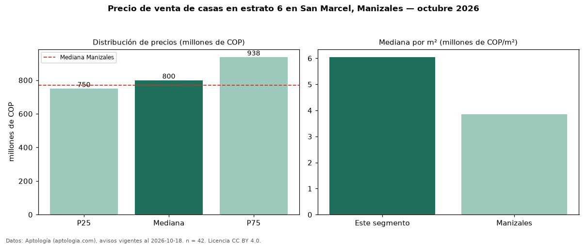

Precio de venta de casas en estrato 6 en San Marcel, Manizales — octubre 2026
COP 800 millones es el precio mediano de casas en estrato 6 en venta en San Marcel, Manizales (n = 42 avisos). Frente a la mediana de toda la vivienda de estrato 6 de San Marcel (COP 750 millones, n = 76), queda 7 % por encima; este segmento reúne el 55 % de esos avisos. Por metro cuadrado, la mediana es COP 6,05 millones/m² (n = 41), 10 % por debajo del conjunto de referencia (COP 6,72 millones/m²). El área mediana anunciada es 138 m². El segmento con más oferta es el de 3 o más habitaciones (42 avisos, mediana COP 800 millones). La administración mediana declarada es COP 600.000 al mes (n = 31). La mediana de todas las casas en venta de Manizales es COP 770 millones (+4 % de diferencia). 95 % de los avisos con el dato declara parqueadero. Datos: Aptología (aptologia.com), CC BY 4.0 — https://www.aptologia.com/casas-en-venta/manizales/san-marcel. Archivos: PDF, CSV con las cifras y gráfica PNG.

| Avisos únicos | 42 |
|---|---|
| Percentil 25 | COP 750.000.000 |
| Mediana | COP 800.000.000 |
| Percentil 75 | COP 937.500.000 |
| Mediana por m² | COP 6.048.387 |
Fuente: avisos vigentes de portales inmobiliarios recopilados por Aptología, deduplicados (mínimo 30 avisos únicos por celda). Precios pedidos, no cerrados. Fecha: 2026-10-18.